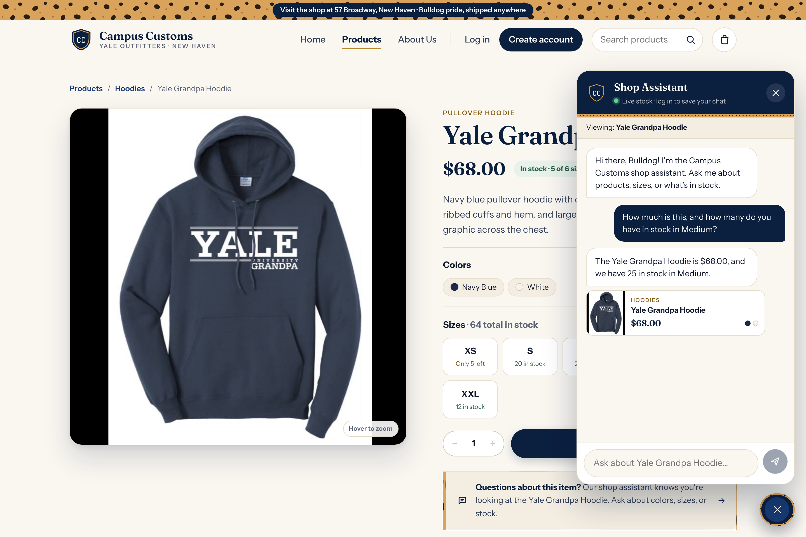
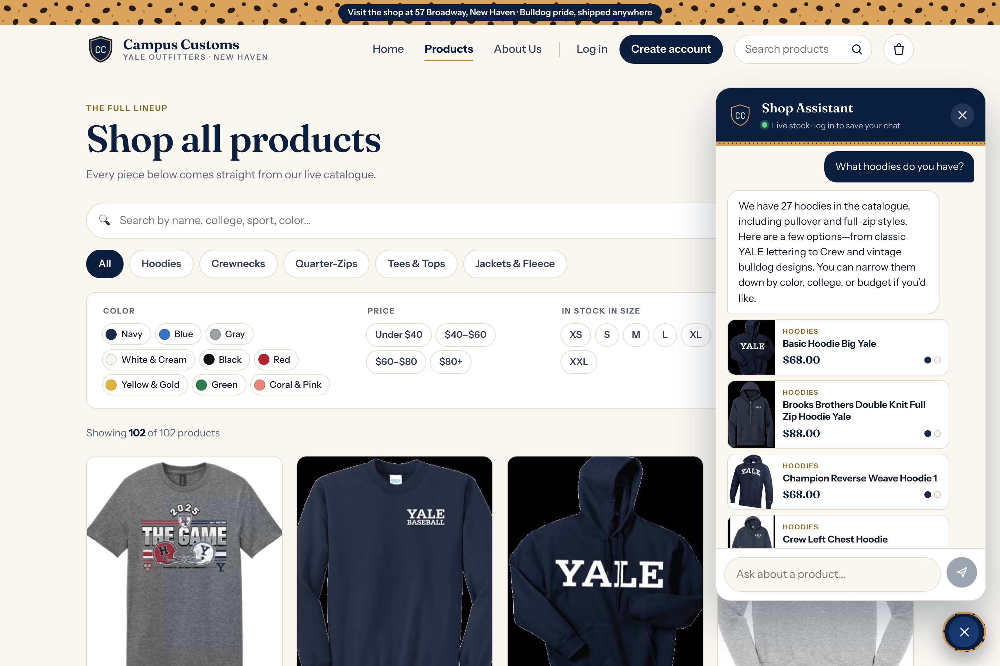
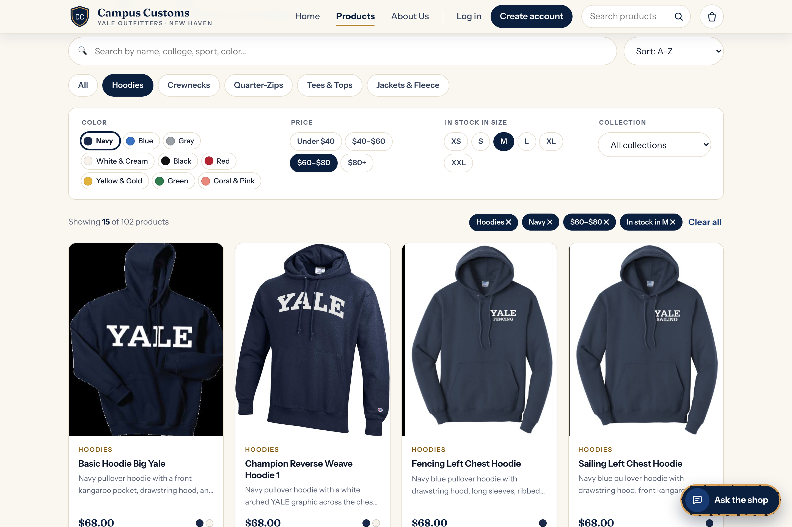

Campus Customs — Application Check
Screenshots taken from the live app (React + Vite frontend → FastAPI → PydanticAI agent →
campus_customs.db). Each result was checked against the database before it was captured.
1. Chat — Inventory and Price

campus_customs.db.
- Database:
catalogue.price= 68.0;inventory(yale-grandpa-hoodie, M) = 25. - “This” resolved to the open product via page context (the “Viewing: Yale Grandpa Hoodie” strip in the chat).
2. Chat — Dynamic Product Search

- Cards returned: Basic Hoodie Big Yale ($68), Brooks Brothers Double Knit Full Zip Hoodie Yale ($88), Champion Reverse Weave Hoodie 1 ($68), Crew Left Chest Hoodie, District Vit Hoodie Vintage Bulldog, District Vit Hoodie Vintage Sailor Bulldog. All six are hoodies in the database.
3. Problem 9 Usability Feature — Product Search & Filters

- The count 15 matches a direct database query (navy hoodies priced $60–$80 with Medium in stock).